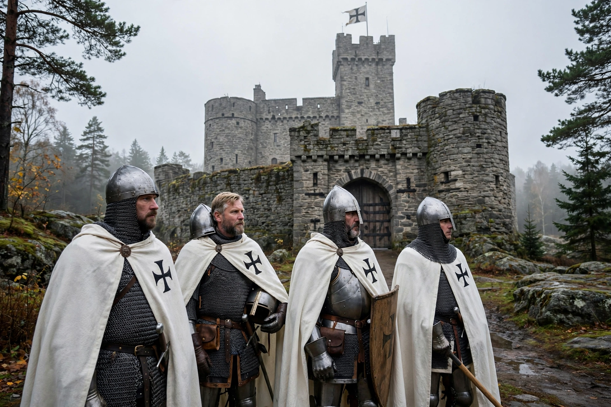

| Livonian Order | |
|---|---|
| Active | 1237–1561 |
| Allegiance | Teutonic Order; Holy Roman Empire |
| Type | Catholic military order |
| Headquarters | Wenden (Cēsis) and Fellin (Viljandi) |
| Patron | Blessed Virgin Mary |
| Predecessor | Livonian Brothers of the Sword |

The Livonian Order was an autonomous branch of the Teutonic Order, formed in 1237 after the defeat of the Livonian Brothers of the Sword at the Battle of Saule (1236) and their incorporation into the Teutonic Knights. It ruled parts of present-day Latvia and Estonia — the region known as Terra Mariana or Old Livonia — as part of the Livonian Confederation until its dissolution in 1561 during the Livonian War.
The Order's master, entitled the Landmeister, governed from castles such as Wenden (Cēsis) and Fellin (Viljandi). The Order fought prolonged wars against the Grand Duchy of Lithuania, the Novgorod and Pskov republics, and Denmark over control of the eastern Baltic. Its knights were defeated by Alexander Nevsky at the Battle on the Ice (Lake Peipus) in 1242. Domestically, the Order competed for power with the Archbishop of Riga and the Hanseatic cities, and it crushed the Estonian St. George's Night Uprising in 1343.
Weakened by internal conflict and the rising power of Ivan IV's Russia, the Order collapsed during the Livonian War (1558–1583). Its last master, Gotthard Kettler, secularised the Order's remaining lands: in 1561 he became the first Duke of Courland and Semigallia, a vassal of Poland-Lithuania, and converted to Lutheranism, ending the Livonian Order's existence.